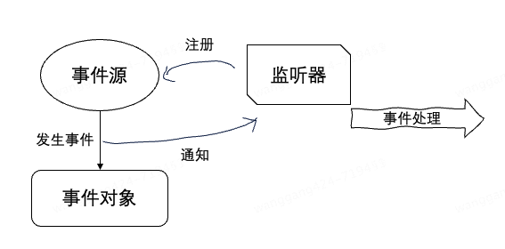

JavaWeb开发基础Servlet事件和监听器¶

事件和监听器¶
事件是指在程序运行过程中发生的特定动作或情况。比如：
用户操作，如点击按钮、输入文本
系统操作，如文件读取完成、网络连接断开
应用程序内部的状态变化，如对象属性改变、方法调用
监听器是一个接口或类，用于定义在特定事件发生时要执行的操作。监听器会“监听”特定的事件，当事件发生时，监听器中的相应方法会被调用，从而执行预定义的操作。
事件和监听器是相辅相成的，它们的工作原理如下：

事件源：触发事件的来源。例如，按钮是事件源，点击按钮会触发点击事件
事件对象：当事件发生时，事件源会创建一个事件对象，包含有关事件的信息
注册监听器：监听器需要注册到事件源，以便监听特定的事件。注册后，事件源会在事件发生时通知监听器
事件处理：当事件发生时，事件源会调用监听器中的相应方法，传递事件对象，从而执行预定义的操作
Servlet Event Class¶
事件（Event）是一个类，封装了与特定事件相关的信息。
基本是构造方法和get方法：
ServletRequestEvent
public class ServletRequestEvent extends EventObject { private static final long serialVersionUID = 1L; private final ServletRequest request; public ServletRequestEvent(ServletContext sc, ServletRequest request) { super(sc); this.request = request; } public ServletRequest getServletRequest() { return this.request; } public ServletContext getServletContext() { return (ServletContext) super.getSource(); } }
ServletRequestAttributeEvent
public class ServletRequestAttributeEvent extends ServletRequestEvent { private static final long serialVersionUID = 1L; private final String name; private final Object value; public ServletRequestAttributeEvent(ServletContext sc, ServletRequest request, String name, Object value) { super(sc, request); this.name = name; this.value = value; } public String getName() { return this.name; } public Object getValue() { return this.value; } }
ServletContextEvent
public class ServletContextEvent extends EventObject { private static final long serialVersionUID = 1L; public ServletContextEvent(ServletContext source) { super(source); } public ServletContext getServletContext() { return (ServletContext) super.getSource(); } }
ServletContextAttributeEvent
public class ServletContextAttributeEvent extends ServletContextEvent { private static final long serialVersionUID = 1L; private final String name; private final Object value; public ServletContextAttributeEvent(ServletContext source, String name, Object value) { super(source); this.name = name; this.value = value; } public String getName() { return this.name; } public Object getValue() { return this.value; } }
HttpSessionEvent
public class HttpSessionEvent extends EventObject { private static final long serialVersionUID = 1L; public HttpSessionEvent(HttpSession source) { super(source); } public HttpSession getSession() { return (HttpSession) super.getSource(); } }
HttpSessionBindingEvent
public class HttpSessionBindingEvent extends HttpSessionEvent { private static final long serialVersionUID = 1L; private final String name; private final Object value; public HttpSessionBindingEvent(HttpSession session, String name, Object value) { super(session); this.name = name; this.value = value; } public String getName() { return this.name; } public Object getValue() { return this.value; } }
Servlet Listener Interface¶
监听器（Listener）是一个接口，定义了处理这些事件的方法。
ServletRequestListener
public interface ServletRequestListener extends EventListener { void requestDestroyed(ServletRequestEvent sre); void requestInitialized(ServletRequestEvent sre); }
ServletRequestAttributeListener
public interface ServletRequestAttributeListener extends EventListener { void attributeAdded(ServletRequestAttributeEvent srae); void attributeRemoved(ServletRequestAttributeEvent srae); void attributeReplaced(ServletRequestAttributeEvent srae); }
ServletContextListener
public interface ServletContextListener extends EventListener { void contextInitialized(ServletContextEvent sce); void contextDestroyed(ServletContextEvent sce); }
ServletContextAttributeListener
public interface ServletContextAttributeListener extends EventListener { void attributeAdded(ServletContextAttributeEvent scae); void attributeRemoved(ServletContextAttributeEvent scae); void attributeReplaced(ServletContextAttributeEvent scae); }
HttpSessionListener
public interface HttpSessionListener extends EventListener { void sessionCreated(HttpSessionEvent se); void sessionDestroyed(HttpSessionEvent se); }
HttpSessionBindingListener
public interface HttpSessionBindingListener { void valueBound(HttpSessionBindingEvent event); void valueUnbound(HttpSessionBindingEvent event); }
HttpSessionActivationListener
public interface HttpSessionActivationListener { void sessionWillPassivate(HttpSessionEvent se); void sessionDidActivate(HttpSessionEvent se); }
HttpSessionAttributeListener
public interface HttpSessionAttributeListener extends EventListener { void attributeAdded(HttpSessionBindingEvent se); void attributeRemoved(HttpSessionBindingEvent se); void attributeReplaced(HttpSessionBindingEvent se); }
Event与Listener¶
一个事件可以对应多个监听器，它们是怎么关联的？查看ServletRequestListener源码：
package javax.servlet;
import java.util.EventListener;
public interface ServletRequestListener extends EventListener {
void requestDestroyed(ServletRequestEvent var1);
// 入参是ServletRequestEvent
void requestInitialized(ServletRequestEvent var1);
}
ServletRequestListener接口的方法入参是ServletRequestEvent类型，也就是说，在调用监听器ServletRequestListener的requestInitialized方法时，会传入事件对象ServletRequestEvent。
每种类型的事件都有对应的监听器接口，Servlet容器会根据事件类型调用相应的监听器方法。以下是一个简化的示例，展示了Servlet容器如何根据事件类型调用相应的监听器方法：
1.定义事件和监听器
import java.util.EventListener;
import java.util.EventObject;
// 定义ServletRequestEvent类
public class ServletRequestEvent extends EventObject {
private static final long serialVersionUID = 1L;
private final ServletRequest request;
public ServletRequestEvent(ServletContext sc, ServletRequest request) {
super(sc);
this.request = request;
}
public ServletRequest getServletRequest() {
return this.request;
}
public ServletContext getServletContext() {
return (ServletContext) super.getSource();
}
}
// 定义ServletRequestListener接口
public interface ServletRequestListener extends EventListener {
void requestDestroyed(ServletRequestEvent sre);
void requestInitialized(ServletRequestEvent sre);
}
2.定义ServletContext和ServletRequest
public class ServletContext {
// 简化的ServletContext实现
}
public class ServletRequest {
// 简化的ServletRequest实现
}
3.定义Servlet容器
import java.util.ArrayList;
import java.util.List;
public class SimpleServletContainer {
private List<ServletRequestListener> requestListeners = new ArrayList<>();
// 注册监听器
public void addServletRequestListener(ServletRequestListener listener) {
requestListeners.add(listener);
}
// 模拟请求初始化
public void initializeRequest(ServletRequest request, ServletContext context) {
// 创建事件对象
ServletRequestEvent event = new ServletRequestEvent(context, request);
// 遍历监听器，调用方法，传入事件对象
for (ServletRequestListener listener : requestListeners) {
listener.requestInitialized(event);
}
}
// 模拟请求销毁
public void destroyRequest(ServletRequest request, ServletContext context) {
ServletRequestEvent event = new ServletRequestEvent(context, request);
for (ServletRequestListener listener : requestListeners) {
listener.requestDestroyed(event);
}
}
}
4.实现监听器
@WebListener
public class MyServletRequestListener implements ServletRequestListener {
@Override
public void requestInitialized(ServletRequestEvent sre) {
System.out.println("Request initialized: " + sre.getServletRequest());
}
@Override
public void requestDestroyed(ServletRequestEvent sre) {
System.out.println("Request destroyed: " + sre.getServletRequest());
}
}
监听器可以通过注解@WebListener或在web.xml中进行配置：
使用注解：
@WebListener public class MyServletRequestListener implements ServletRequestListener { // 实现接口方法 }
在web.xml中配置：
<listener> <listener-class>com.example.MyServletRequestListener</listener-class> </listener>
5.测试代码
public class Main {
public static void main(String[] args) {
// 创建Servlet容器
SimpleServletContainer container = new SimpleServletContainer();
// 创建ServletContext和ServletRequest
ServletContext context = new ServletContext();
ServletRequest request = new ServletRequest();
// 注册监听器
container.addServletRequestListener(new MyServletRequestListener());
// 模拟请求初始化和销毁
container.initializeRequest(request, context);
container.destroyRequest(request, context);
}
}
运行结果：
Request initialized: ServletRequest@1a2b3c4d
Request destroyed: ServletRequest@1a2b3c4d
解释：
事件创建：
当请求初始化时，容器创建一个
ServletRequestEvent对象，并将ServletContext和ServletRequest作为参数传递给事件对象的构造函数同样，当请求销毁时，容器再次创建一个
ServletRequestEvent对象
事件通知：
容器遍历所有注册的监听器，检查它们是否实现了
ServletRequestListener接口对于实现了
ServletRequestListener接口的监听器，容器调用它们的requestInitialized或requestDestroyed方法，并传递ServletRequestEvent对象
在实际的Servlet容器（如Tomcat、Jetty等）中，事件的触发和监听器的调用是由容器内部的代码实现的。容器会在特定事件发生时创建相应的事件对象，并调用注册的监听器方法。通过这种机制，开发者可以在特定事件发生时执行自定义逻辑，从而实现更灵活和强大的功能。换句话说，这些监听器的工作方式类似于钩子函数（Hook），通过实现这些监听器接口，我们可以在Servlet生命周期的不同阶段，自定义处理逻辑。